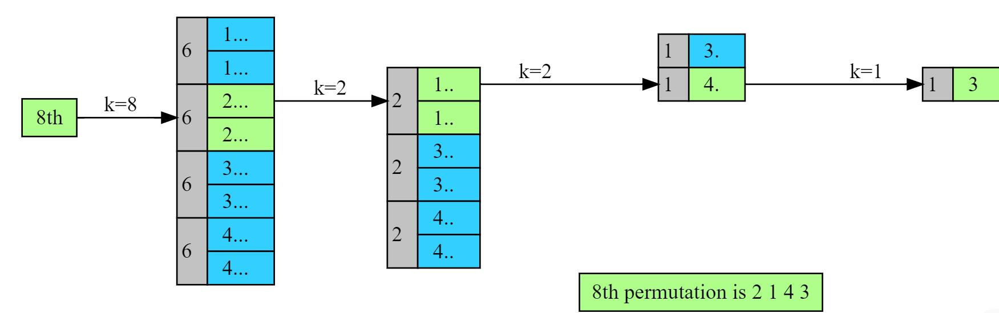

intBinarySearchRec(int nums[], int key, int low, int high){ if (low > high) { return-1; }
// Finding the mid using floor division int mid = low + ((high - low) / 2);
// Target value is present at the middle of the array if (nums[mid] == key) { return mid; }
// Target value is present in the low subarray elseif (key < nums[mid]) { returnBinarySearchRec(nums, key, low, mid - 1); }
// Target value is present in the high subarray else { returnBinarySearchRec(nums, key, mid + 1, high); } }
intBinarySearch(int nums[], int target, int length){ returnBinarySearchRec(nums, target, 0, length - 1); }
The time complexity of this solution is logarithmic,O(logn)
The space complexity of this solution is logarithmic,O(logn) because the recursive approach consumes memory on the stack.
Find kth Permutation
input:3,3
output:213
1-3’s permutation:123,132,213,231,312,321
Naive solution
find all permutations and then return the kth permutation.
Optimized solution
We can do better, if we look closely at the diagram above. If we are given k and we somehow guess which block it’s going to lie in, that will help us find at least the first element.
Similarly, within that block, if we can identify a sub-block where k resides, it will help us find the second element. We can do this recursively until we run out of options. Here is a visual representation of this approach if k=8 and n=4

Here is the algorithm:
1 2 3 4 5 6 7 8 9
If the input vector is empty return the result vector
block_size = (n-1)! ['n' is the size of vector] Figure out which block k will lie in and select the first element of that block (this can be done by doing (k-1)/block_size )
Append a selected element to the result vector and remove it from the original input vector
Deduce from k the blocks that are skipped, i.e, k = k - selected*block_size, and goto step 1
intfactorial(int n){ if (n == 0 || n == 1) return1; return n * factorial(n - 1); }
voidFindKthPermutation(vector<char>& v, int k, string& result, vector<int>& factorial){ if (v.empty()) { return; }
int n = (int)(v.size());
// factorial is the number of permutations starting with first digit // selected is the number of digits in permutation int selected = (k - 1) / factorial[n - 1];
// Getting the first digit from selected array result += v[selected]; v.erase(v.begin() + selected); k = k - (factorial[n - 1] * selected);